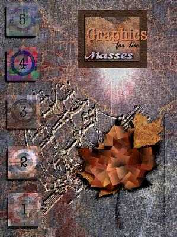

"Linux Gazette...making Linux just a little more fun!"
Graphics Muse
 |
Set your browser as wide as you'd like now.
I've fixed the Muse to expand to fill the available space!
© 1997 by mjh
|
 |
muse:
-
v; to become absorbed in thought
-
n; [ fr. Any of the nine sister goddesses of learning and the arts
in Greek Mythology ]: a source of inspiration
 elcome
to the Graphics Muse! Why a "muse"? Well, except for the sisters aspect,
the above definitions are pretty much the way I'd describe my own interest
in computer graphics: it keeps me deep in thought and it is a daily source
of inspiration.
[Graphics Mews] [Musings]
[Resources] elcome
to the Graphics Muse! Why a "muse"? Well, except for the sisters aspect,
the above definitions are pretty much the way I'd describe my own interest
in computer graphics: it keeps me deep in thought and it is a daily source
of inspiration.
[Graphics Mews] [Musings]
[Resources]
|
 his column
is dedicated to the use, creation, distribution, and discussion of computer
graphics tools for Linux systems.
his column
is dedicated to the use, creation, distribution, and discussion of computer
graphics tools for Linux systems.
The format of this month's column has changed just a tad.
I rebuilt my template for the column using Netscape's Page Composer, part
of the Communicator 4.01 Preview Release 6. There are lots of little
things I don't like about Communicator but the Page Composer is quite nice.
It's the first WYSIWYG HTML editor I've used on Linux that I've really liked.
I intend to do many of my pages using it from now on. To be fair
to Communicator, it is a preview release (once known as Beta, but I guess
that has bad connotations now). I've always been pleased with Netscape's
products. If I could just get them to publicly support Linux I'd
be happier. Anyway, once the little annoying aspects are cleared
up the 4.x release should be quite a boost to Netscape's product line. 
During the month of July I was finishing up a major X
application for my employer (EMASS, Inc, a division of Raytheon/E-Systems/TI/and
who knows what else). One of the last things I had to do was port
the application to a slew of Unix platforms. Well, the ports were
pretty easy - it was just a matter of getting the build environment set
up right - but I had lots of free time to burn while some compiles were
running. Fortunately I was able to log in from home to do these,
so I started to look at a few graphics applications that I've been meaning
to get to for some time. The first is Image Alchemy, a commercial
product from Handmade Software that provides extensive image conversion
capabilities. I'd long ago promised Hap Nesbitt of Handmade Software
that I would do the review. My apologies to him and Handmade for
taking so long to get around to it.
The next package is ImageMagick. I've seen the posts
for this package on comp.os.linux.announce many times and have heard lots
of good things about the package. I decided it was time to take a
closer look.
Finally, I decided to take a look at a tool that's been
around for awhile but that hasn't really been discussed much in the forums
that I frequent: Geomview. A quick glance at the pre-built
binary really caught my eye. This is a tool with a lot of potential.
In this month's column I'll also be covering:
-
Is VRML ready for Prime Time?
-
In Q and A: how do you turn TGA files from POV-Ray into an animation?
Oh, and the image on the right, Graphics for the Masses, was created
as a demonstration of what can be done with the GIMP. It was enough
to convinve the Linux Journal that I could do the cover for their November
Graphics issue using this handy Photoshop clone. The final cover
art doesn't look anything like this one, however. It was just a way
of showing off what is possible. If anyone else needs a cover done,
feel free to drop me a line!
 |
Disclaimer: Before I get too far into this
I should note that any of the news items I post in this section are just
that - news. Either I happened to run across them via some mailing list
I was on, via some Usenet news group, or via email from someone. I'm not
necessarily endorsing these products (some of which may be commercial),
I'm just letting you know I'd heard about them in the past month.
 |
I ran across this in the GIMP
Developers mailing list. Unfortunately, I forgot to save the
attribution. My apologies to the original poster of the message.
I've been reading some of the W3 specs recently, and I've come
across some good stuff. I'm impressed - until recently it seemed like the
W3 either wouldn't or couldn't get their act together, but now they seem
to be putting out genuinely useful specifications.
Anyway, the one with perhaps the greatest relevance to GIMP users is
the sRGB standard, which specifies how images should look when displayed
on the Internet. If you're interested at all in gamma correction and monitor
color spaces, take a look at:
http://www.w3.org/pub/
WWW/Graphics/Color/sRGB.html
If you're not familiar with the color management literature, some of
it will be hard going, but it might be worthwhile anyway.
For people who are not intimately familiar with CIE color spaces and
all that stuff, the bottom line of sRGB is that the default gamma value
for Gimp should be 1.0 (as indeed it is in 0.99.10). For people that have
calibrated monitors (most likely a tiny fraction of Gimp users), it would
be appropriate to use some form of color management technology (I think
some of the new X's have color management defined, but I'm not sure how
good it is) and do a transformation from the image color space to the screen
color space. However, in the absence of that, gamma correction is generally
not appropriate.
In the long term, it might be a good idea to add color management to
the Gimp, but for now I think it's fine without. Color management tends
not to work well unless it's very carefully applied - generally, something
that only happens in high end environments.
|
|
|
xfont3d
This program is a graphical interface to Font3D
(http://www-personal.ksu.edu/
~squid/font3d.html), and requires the XForms library (http://bragg.phys.uwm.edu/xforms).
The interface was developed with Font3D
v1.6. Font3D generates geometry (model) files for 3D text
in a variety of output formats (POV, RIB, etc.) from True Type font files.
I designed xfont3d to
be used as a tool mainly for POV-Ray. The built-in POV-Ray pre viewer
allows you to render a sample of the font generated by Font3D. However,
xfont3d supports all the output options of Font3D - you just won't be able
to preview it directly from xfont3d.
You can view an image of the interface and get the source
code from
http://cspar.uah.edu/~mallozzir
I wrote the thing in about three days, so by that time
I was sick of it, and hence it has not really undergone much testing
Please send any bug reports or comments to mallozzir@cspar.uah.edu.
Dr. Robert S. Mallozzi
University of Alabama in Huntsville |
|
GCL
GCL (Graphics Command
Language) is an interpreting language that is based on the data plotting
library DISLIN. Version 2.2 of GCL is now released.
About 400 plotting and parameter setting routines of DISLIN
can be called from GCL for displaying data as curves, bar graphs, pie charts,
3D-colour plots, surfaces, contours and maps. Several output formats are
supported such as X11, PostScript, CGM, HPGL, TIFF and Prescribe.
Some quickplots are also added to GCL that can display
data with one command. Similar to programming languages such as Fortran
and C, high-level language elements can be used within GCL. These are variables,
operators, array operations, loops, if and switch statements, user-defined
subroutines and functions, and file I/O routines.
GCL is free available for the operating systems MS-DOS,
Windows 95, VMS, Linux, AIX, Digital UNIX, HP-UX and SunOS.
FTP sites:
ftp://ftp.gwdg.de/pub/grafik/dislin
ftp://linhmi.mpae.gwdg.de/pub/dislin
Home Page:
http://www.mpae.gwdg.de/dislin/dislin.htm |
|
|
ImageMagick 3.8.8
The newest version of the binary distribution of ImageMagick,
version 3.8.8, has been uploaded to Sunsite.. You can also get it
from its primary site at ftp.wizards.dupont.com
/pub/ImageMagick/linux.
ImageMagick (TM), version 3.8.8, is a package for display and interactive
manipulation of images for the X Window System. ImageMagick performs,
also as command line programs, among others these functions:
-
Describe the format and characteristics of an image
-
Convert an image from one format to another
-
Transform an image or sequence of images
-
Read an image from an X server and output it as an image file
-
Animate a sequence of images
-
Combine one or more images to create new images
-
Create a composite image by combining several separate images
-
Segment an image based on the color histogram
Retrieve, list, or print files from a remote network site
The major changes in ImageMagick 3.8.8 are:
-
PerlMagick now can interactively display an image or animate an image sequence.
-
Subimages can now be specified in any order. For example, image.miff[3,2],
image.miff[11-1], or image.miff[1,2,2,3].
-
Added -remote to display and animate. It allows you to send a load
image command to an already running executable.
-
Duplicate entries in an image colormap are now automatically eliminated.
-
Display and animate now support embedded characters for the -title option
(e.g. -title "%f[%s]", for filename and scene).
ImageMagick supports also the Drag-and-Drop protocol form the OffiX package
and many of the more popular image formats including JPEG, MPEG, PNG, TIFF,
Photo CD, etc.
|
Freedom VR - Java Virtual Reality Applet
Freedom VR is a photographic
VR applet that was developed with Linux but also works on other flavors
of Unix, the Macintosh and even Windows. It beats Quicktime VR in
compression performance -- because Freedom VR uses Internet standards such
as .gif and .jpeg, Freedom VR content can be produced on any platform.
The developers are interested in working with other programmers to develop
software for converting other VR formats such as VRML and Quicktime VR
to Freedom VR. We've also written up a tutorial for taking VR photographs.
Freedom VR applet:
http://www.msc.cornell.edu/
~houle/vr/freedom/
Paul and Olivia's VR Garden (produced with Freedom VR):
http://www.msc.cornell.edu/
~houle/vr/garden/
An introduction to VR photography:
http://www.msc.cornell.edu/
~houle/vr/howto/ |
|
Jaw3DLib
Jaw3DLib, a 3d programming
library has been released for several platforms: linux, ms-dos, and sunos.
I'd like a few alpha testers to take a look at this. An example app is
included that can be easily modified. Go to: http://umn.edu/~jawed/jaw3d/
Jawed Karim
jawed@tc.umn.edu
http://umn.edu/~jawed |
|
|
Looking for NetPBM archives? Try
http://www.arc.umn.edu/
GVL/Software/pbmplus-ftp.html
for a list of archive sites.
|
|
| For those of you owning or otherwise interested in Connectix
QuickCams:
There is now a campaign attempting to convince Connectix
to make the specifications for their VIDEC compression algorithm available
publicly. Without the spec, it is not possible for any third-party
projects (such as SANE) to support 16 bit color mode. If you want
to join or learn more about the campaign, please visit:
http://www.kabel.de/
~hmueller/qc/freevidec.shtml
|
|
|
IKM Interactive announces the release of axis 1.0alpha, a 3D rendering
engine for Linux/SGI/Sun/Win95/WinNT.
A 3Dfx accelerated version is also available for Win95 (and
possibly Linux soon). A Power Mac version is currently in development.
You can download the current version from http://www.ikm.com
This is an alpha release, mostly of interest to 3D hackers.
Axis uses OpenGL on
SGI and Win 95/NT, and Mesa
on the remaining platforms. The 3dfx accelerated version utilizes
the Mesa Voodoo
libraries. The Linux version currently has the best coloring/shading;
the different OpenGL implementations have quirks that we haven't sorted
out yet.
The rendering engine uses a simple stack machine interpreter,
and processes a language that has similarities to Lisp, Forth, and Adobe's
PostScript. The interpreter is multi-threaded, so objects in the 3D environment
can have private namespaces. We are working on a programming manual
for the language.
It is also network-ready; you can talk directly to the
rendering engine with a TCP/IP connection. The distribution includes
source code for an example TclTk program which utilizes the network connection
(this is the tool we used to position models within the 3D environment).
We will be releasing more complex modelers shortly.
The rendering engine and language interpreter will be the
base for our multi-user shared environment application, which we plan to
release near the end of July. Environments, and information about
positions of other users, will be downloaded via TCP/IP; if you choose
to customize your avatar, code for that can be uploaded.
Enjoy, and let me know if you have questions.
Patrick H. Madden
phm@webvision.com
pickle@cs.ucla.edu
or
phm@ikm.com when we get our mail server
sorted out.....
|
|
WSCG '98 International Conference and Exhibition
Call for Papers and Participation
Deadline for papers September 30,1998
The Sixth International Conference in Central
Europe on Computer Graphics and Visualization 98 in cooperation with IFIP
working group 5.10 on Computer Graphics and Virtual Worlds will be held
in February 9 - 13, 1998 in Plzen at the University of West Bohemia close
to PRAGUE, the capital of Czech Republic
Conference Chairs
Nadia Magnenat Thalmann, MIRALab-CUI, Univ. of Geneva, Switzerland
Vaclav Skala, Univ. of West Bohemia, Czech Republic
The latest information is available at:
http://wscg.zcu.cz
or
http://herakles.zcu.cz
Full announcement in plain text is available. |
|
POV Texture Library
This texture library has been updated and the URL has changed. This
site is done by a non-Unix user, but the textures are platform inspecific.If
you're looking for some interesting textures for your POV-Ray scenes take
a look at
http://www.informatik.tu-cottbus.de/
~rs/povray/texlib/
|
|
IRTC CD-ROM Due out soon!
Chris Cason, who manages the server which supports the IRTC
and POV-Ray Web sites. is
getting ready to publish the IRTC CD-ROM. This CD contains the collection
of images submitted to the IRTC over that last year, the IRTC's first year
of existance (in its reincarnation that is).
If you're interested in getting a copy of this CD, please check out
the IRTC Web site for more information.
All proceeds from the CD go to the maintenence and expansion of the Web
server. |
|
|
EPSON Scanner Driver
EPSCAN is a scanner driver for EPSON
ES-1200C/GT-9000 scanners. It includes a driver and a nice X frontend.
It allows previewing, and selecting a region of an image to be scanned,
as well as changing scanner settings. It only supports scanners attached
to a SCSI port, not to the parallel port. The driver should
support any of the ES-{300-800}C / GT-{1000-6500}.
EPSCAN is available from:
ftp://sunsite.unc.edu/pub/
Linux/Incoming/epscan-0.1.tar.gz
and an rpm version to
ftp://ftp.redhat.com/pub/
Incoming/epscan-0.1-1.src.rpm
ftp://ftp.redhat.com/pub/
Incoming/epscan-0.1-1.i386.rpm
The rpm version will probably be moved, if it hasn't already, to
ftp://ftp.redhat.com/pub/
contrib/epscan-0.1-1.src.rpm
ftp://ftp.redhat.com/pub/
contrib/epscan-0.1-1.i386.rpm
The sunsite version will probably be moved to
ftp://sunsite.unc.edu/pub/ Linux/apps/graphics/scanners/epscan-0.1.tar.gz
Adam P. Jenkins
ajenkins@cs.umass.edu
Requirements:
-
Linux 2.x
-
XFree3.x
-
Qt library version >= 1.1
-
libtiff version >= 3.4
-
g++ version >= 2.7.2
You can get the Qt library from http://www.troll.no.
EPSCAN may work with older versions of Linux, XFree, and g++; this is just
what it was developed with.
|
| Has anyone tried out ELECTRO-GIG's product, 3DGO? The Graphics
Muse wants to know!
It's 37M, and downloading across a 36.6 modem is painful at best.
I'd love to try it, but I don't have the cash on hand for ordering it and
having it shipped (I don't mind paying for it, but next month's trip to
SIGGRAPH plus some vacation time sort of sucked me dry for the time being).
If you've used it let me know your thoughts. I'll be happy to pass
any review on to my readers, with full credit to you of course! |
|
|
Iv2Pov/IV2Ray
Cow House Productions is pleased to
announce the release of Iv2POV. Iv2POV
is a translator / converter for Inventor 2.0 / VRML 1.0 files to POVRAY,
the popular raytracing program. Both source code and an Irix 5.3 executable
are available (free!) at
http://www.cowhouse.com/
Home/Converters/converters.html.
Cow House is also pleased to
present a new release of Iv2Ray, the
Inventor (VRML 1.0) to Rayshade (a different popular raytracing program)
converter / translator. Iv2Ray is also available as an Irix 5.3 binary
and as C++ source code.
While you are at www.cowhouse.com
- feel free to take a look around, download some samples, and otherwise
exerciseyour browser. |
|
Did You Know?
...the growth of 3D modellers continues at a frightening pace. Another
modeller was recently announced: GL-SPACE.
You can find information on this new modeller at http://tularosa.eece.unm.edu/staff/greywolf/glspace/.
It requires Tcl7.5/Tk4.1 and Mesa 1.2.8 or OpenGL. The interface
is quite cool - one of the best I've seen yet. The cameras location
is represented by - a camera! Really. Take a look at it.
...there is a very nifty morphing tool, called xmrm,
available at http://www.cg.tuwien.ac.at/research/ca/mrm/index.html.
I played with this a little and it has one of the most professional
looking interfaces I've seen in awhile. It's relatively easy to use,
at least if you follow the one example morph it provides.
...there is a Web site devoted to explaining how to make MPEG movies?
Take a look at http://www.arc.umn.edu/
GVL/Software/mpeg.html to find out more.
Q and A
Q: I am quite new to POVRAY and would like to know
where I can get an application which plays a series of *.tga files as an
animation. I have created all the TGA files using POV. What
can I use to play these files in sequence?
Merv Young.
AUSTRALIA.
A: Well, I don't know of any tools that can take a set
of TGA files and directly turn them into an animation on Linux systems.
I'm not that familiar with animations yet, but here is what I do know.
First, you have two types of animations you can create (with freely
available tools) from a set of raster images: MPEG or an animated
GIF. The latter requires the images to be in GIF format (GIF89a,
actually). There are two tools for taking the GIF files and turning
them into an animation: WhilrGIF
and MultiGIF.
Both are command line tools and both are fairly easy to use. I like
MultiGIF a little more simply because it can create smaller animation using
sprites (small images that can overlay the previous image). Understanding
how to do this is a little tricky, but not that tough. WhirlGIF simply
concatenates the set of GIFs together into an animated sequence.
Playing an animated GIF can only be done by Web browsers, although I only
know for certain that both Netscape and MSIE support this format.
To my knowledge (someone correct me if I'm wrong) there are no "animated
GIF players" for Linux.
MPEG is an animation format that I've just started to experiment with.
There is only one command line tool that I'm aware of for creating the
animations - mpeg_encode
- but there are quite a few tools for viewing them (xanim,
MpegTV, mpeg_play,
etc). Creating the animation is done by setting up a text file with
the configuration information needed by mpeg_encode. It then reads
the configuration file, determines what sort of processing is to be done
and takes the input files and creates the MPEG output file. The configuration
can be fairly sophisticated, but I found the default template worked fairly
well with only a few minor modifications. One of those modifications
was to tell mpeg_encode what other tool to use to convert the input files,
which were in TIFF format (rendered from BMRT), into a format that mpeg_encode
could handle. Fortunately, mpeg_encode handles two fairly common
formats: JPEG and PPM/PNM (it actually supports a couple of others,
but these two will be readily recognizable to most users). I used
the NetPBM tool tifftopnm. The TIFF files are converted
on the fly by mpeg_encode as long as you tell it what converter to use.
There is another format called FLI which has an encoder. My understanding
is that this format is slowly dying as MPEG gains popularity.
So now that you know what formats you need to put the animation in you
might wonder how to get the TGA files into the formats you need.
Thats a common question when dealing with both 2D and 3D images, in both
animated and static formats. The answer: get either the NetPBM
tools. ImageMagick, or ImageAlchemy (the latter being a more sophisticated
commercial product). Any of these are valuable tools for your arsenal
of image processing since they all perform the often needed task of converting
from one format to another. NetPBM is what I currently use, although
I don't believe it has a tool for converting JPEG images to other formats
(there is an add-on package for NetPBM that handles this, but I don't think
the NetPBM package itself has JPEG conversion tools - I could be wrong,
its been awhile since I downloaded the package).
So, to summarize how to get your TGA files into an animation:
-
Deterine which animation format you want to create.
-
Determine what format the input files need to be in (GIF, JPEG or PNM).
-
Be sure you have a tool for converting the TGA files to the input format
- this may be a two step process and it may be possible to get the animation
creation software to handle the conversion for you (such as with mpeg_encode).
-
Get the encoding tools - mpeg_encode, WhirlGIF or MultiGIF.
Is VRML ready for PrimeTime?
Some time back I had a reader send me email asking my thoughts on VRML.
Below is the response I sent. After rereading it I have to say I
still agree with it, although I reserve the right to change my mind after
my trip to SIGGRAPH next month.
Reagen Ward wrote:
I come from the world of PHIGS for visualization, and thus can't
stand VRML as a supposed data format. I'd love to hear your opinions
on why it's not ready for personal use.
Originally I had objected to it due to bandwidth issues. I've
learned since then that this may not be as big a limitation as I once thought
since VRML provides a language which can be passed between client and server
and doesn't (to my knowledge - which admittedly is still somewhat limited)
require the actual images to be passed. PHIGS could probably be done
this way too, but PHIGS needs a "PHIGS for Dummies" layer slapped on top
to make it a little more user friendly.
However, the real limitation right now is processing power. Even
if you pass only descriptions of the objects to render, the end system
still has to be fast enough to render them from the point of view
of the user. This is very CPU intensive. The
average user doesn't have this kind of processing power (have you seen
the new WebTV boxes? They are even slower and
dumber than the average 2 year old PC). This processing could
be moved off CPU into some adapter card (maybe a VRML-ready display card),
but such technology isn't available yet so its cost would still be (for
some time) out of the reach of the average home.
Now it's not unlikely to see VRML in some environs: kiosks in stores
or malls (real ones, not Internet Malls) come to mind or any kind of public
facility that provides information to users to be browsed at their own
pace. These places will have limited point-of-view (like point-of-sale)
locations on a local network so bandwidth is not a problem, nor is server
capacity (it's known pretty much ahead of time how much activity they're
likely to have). The point-of-view boxes can be as powerful as the
mall can afford. VRML provides a reasonable return-on-investment
for these situations.
But the big money, and money (income, that is) is what drives acceptance,
only comes when you can move the technology into the home. Thats
what WebTV's are all about - computers for the common man at toaster prices.
VRML requires too much processing for the average home, so it's not likely
to be a big technology for at least 2-5 years. It depends on if Intel/Sun/HP/etc
can find a way to make money producing VRML-toasters.
Hows that?
|
Image Alchemy
One of the most common tasks graphic artists will face is
converting stock images from CDs and other resources from their original
format to one that can be used by their particular software or medium (such
as for use on the Web). There are actually a plethora of tools for
doing this conversion. xv
will convert between a limited set of formats, but does handle most
of the most common formats. The NetPBM tools handle a huge number
of formats using a very large set of command-line programs. And
ImageMagick
ImageMagick
has both command line and X-based interfaces for converting images.
Each of these has advantages and users will want to play with each to find
one that suits their needs.
Another solution for image conversion and manipulation
comes from Handmade Software in
their Image Alchemy package.
This is a commercial package that features support for over 60 different
image file formats using a command line interface. A graphical interface
is available for Sun systems using OpenLook and there may now be a Motif
version as well, however these do not appear to be available for Linux
yet.
Getting the software requires that you simply download
the Linux binary package from the download
page of Handmade's Web site. There is a demo package available
for free, but the retail version requires a username and password that
can be obtained from their sales department.
The package I have, which I got from Hap Nesbitt at Handmade
Software, contains two binaries: alchemy and alchfont. The
former is the graphics conversion package. The latter is a font manager,
although I'm not really clear on how to use it. The documentation,
330+ pages in a PDF file, didn't contain any references to it. Since
I wasn't expecting this tool I didn't spend any time looking for info on
it at the Handmade Software Web site.
The manual
is available for download from their Web site. It's quite large
(something you'd expect from commercial software and something that is
seriously lacking in many freeware packages) but it covers all the versions
of the software, including 2 chapters (out of 8) and 1 appendix (out of
11) on the DOS/Windows Graphical interface. Along with the manual
you can get runtime help by using the -help command line option.
The runtime help is broken into several categories, each with its own command
line option.
The basic usage takes the following form:
alchemy inputfile
[outputfile] [outputpath] [options]
The input file can be in any of the supported formats listed in the manual.
The output file can be any name. By default the converted file will
be written to a file with the same filename as the input file but with
the appropriate suffix. For example, newfile.tga would become newfile.gif.
Outputpath is useful when you want to convert a series of images.
Options can be any of a large number of conversion options, many
of which are file format specific. The only required option is the
one which specifies which file format the output file should be in.
Text files, what Image Alchemy refers to as response files, with
options can be used by specifying the file name preceeded with an '@' sign,
such as
alchemy @scale
myimagein.tif myimagein.gif
Basically, you can convert one or more images, to files in the local directory
or some other directory, using the command line directly or through the
use of the text files.
Unlike NetPBM the images don't have to be converted to
an interim format before the final image is produced. NetPBM
used the interim format to do its image manipulation, such as scaling or
quantizing the colors in the image. Image Alchemy can do this in
one step using various options.
Speaking of options, the Image Alchemy manual breaks the
available options into 4 categories:
-
General
-
Conversion
-
Color and Palette
-
Scaling and Filtering
-Top of next column-
|
|
More Musings...
-- ImageMagic
|
|
General options include items such as usage, statistics
and memory features. Conversion options specify the output file types
and any related options. For example, -g is the option
for converting to the GIF format. This option has an additional numeric
argument, 0 or 1, to specify which version of the GIF format to use - GIF87A
or GIF89A respectively.
Color and Palette options cover such things as alpha channels,
true color options, dithering and gamma correction. Scaling options
allow the resizing of the input image and along with the Filters provide
for convolution, flipping, positioning and aspect modifications.
All of the options are covered in detail by the manual and summaries are
available through the builtin help option (-help).
When evaluating image conversion utilties the artist will
want to compare the quality and sizes of the images. On my 24-bit
display the quality of the sample JPEG image provided with Image Alchemy
(a photo of the Golden Gate Bridge) didn't change perceptibly when converted
to GIF, Targa (TGA) or TIFF formats. The same image was converted
using xv and NetPBM to these same formats and also showed almost not visible
differences. The following table shows the file sizes for each:
|
GIF |
TGA |
TIFF |
| alchemy |
192360 |
924059 |
769700 |
| xv |
142784 |
921618 |
772046 |
| NetPBM |
146100 |
921618 |
- |
| ImageMagick |
|
|
|
Note that my version of NetPBM does not include the JPEG conversion utilities
so the TIFF image converted by alchemy was used as the input image for
NetPBM's tools. As you can see, the file sizes were very similar
for TGA. Image Alchemy produced a significantly larger version for
the GIF format and a slightly smaller version of the TIFF.
Based on this a user might assume xv or NetPBM might be
better suited for their needs. In many cases this is true, especially
if you are only doing a personal web page or perhaps creating simple greeting
cards. For professional work alchemy provides a wider range of tools
and supported formats than xv and NetPBM, and does so with a single command
line program. Both xv and alchemy provide significant documentation
(you can get xv's by registering your copy and paying a little extra for
the manual). NetPBM provides man pages but these can be difficult
to print and it's not always easy to determine which tool fits which format.
Only Image Alchemy offers commercial support and with continued development
at published intervals. For commercial operations this can be of
key importance.
The moral here is to spend a little time examining your
image conversion needs before investing time in any one particular tool.
Image processing is provided by all of these, but aside from scaling and
perhaps color palette operations you may find the GIMP a better tool for
interactive editing of images. If you need the convenience of command
line oriented operation for batch processing, along with commercial support,
then Image Alchemy may be the tool for you. |
|
|
 |
The following links are just starting points for finding more information
about computer graphics and multimedia in general for Linux systems. If
you have some application specific information for me, I'll add them to
my other pages or you can contact the maintainer of some other web site.
I'll consider adding other general references here, but application or
site specific information needs to go into one of the following general
references and not listed here.
Future Directions
Next month:
No Muse next month (September). I'll be at SIGGRAPH and otherwise
busy throughout August and just won't have time for it. But I'll
be back in October, probably with lots of goodies from SIGGRAPH (or at
least I hope I am!).
Let me know what you'd like to hear
about!
Previous ``Graphics Muse'' Columns
Graphics Muse #1, November 1996
Graphics Muse #2, December 1996
Graphics Muse #3, January 1997
Graphics Muse #4, February 1997
Graphics Muse #5, March 1997
Graphics Muse #6, April 1997
Graphics Muse #7, May 1997
Graphics Muse #8, June 1997
Graphics Muse #9, July 1997
Copyright © 1997, Michael J. Hammel
Published in Issue 20 of the Linux Gazette, August 1997
![[ TABLE OF CONTENTS ]](../gx/indexnew.gif)
![[ FRONT PAGE ]](../gx/homenew.gif)